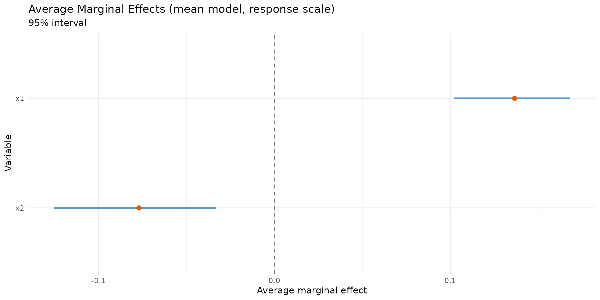
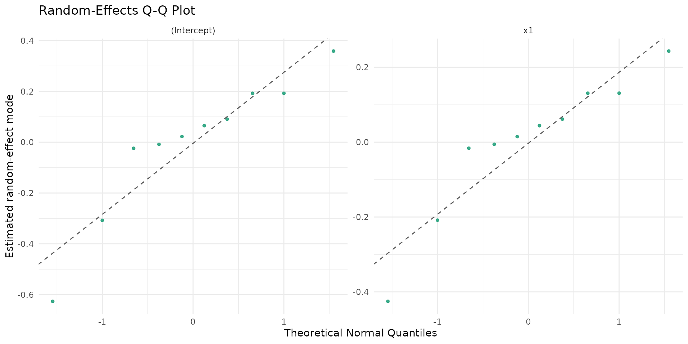

Audience and scope
This vignette is designed for analysts who are already familiar with
beta regression and require a production-oriented workflow
featuring:
- reproducible model selection;
- inferential and predictive diagnostics;
- mixed-effects escalation (
brs -> brsmm)
with Likelihood Ratio (LR) comparisons;
- high-signal reporting tables for technical decision-making.
1) Reproducible simulation and data checks
n <- 260
d <- data.frame(
x1 = rnorm(n),
x2 = rnorm(n),
z1 = rnorm(n)
)
sim <- brs_sim(
formula = ~ x1 + x2 | z1,
data = d,
beta = c(0.15, 0.55, -0.30),
zeta = c(-0.10, 0.35),
link = "logit",
link_phi = "logit",
ncuts = 100,
repar = 2
)
kbl10(head(sim, 10))
| 0.745 |
0.755 |
0.75 |
75 |
3 |
0.5206 |
0.2576 |
-0.9272 |
| 0.705 |
0.715 |
0.71 |
71 |
3 |
-1.0797 |
0.6131 |
0.7927 |
| 0.045 |
0.055 |
0.05 |
5 |
3 |
0.1392 |
-0.6523 |
-0.6891 |
| 0.025 |
0.035 |
0.03 |
3 |
3 |
-0.0847 |
-0.1383 |
-0.0417 |
| 0.275 |
0.285 |
0.28 |
28 |
3 |
-0.6666 |
-0.1236 |
-0.7856 |
| 0.000 |
0.005 |
0.00 |
0 |
1 |
-2.5161 |
-0.9647 |
0.4345 |
| 0.085 |
0.095 |
0.09 |
9 |
3 |
-0.7351 |
0.0190 |
-0.6656 |
| 0.000 |
0.005 |
0.00 |
0 |
1 |
-1.0201 |
1.6917 |
0.4499 |
| 0.605 |
0.615 |
0.61 |
61 |
3 |
0.1136 |
0.8858 |
-0.5480 |
| 0.005 |
0.015 |
0.01 |
1 |
3 |
-0.4738 |
-0.7299 |
1.8569 |
kbl10(
data.frame(
n = nrow(sim),
exact = sum(sim$delta == 0),
left = sum(sim$delta == 1),
right = sum(sim$delta == 2),
interval = sum(sim$delta == 3)
),
digits = 4
)
2) Fixed-effects candidate set and model ranking
fit_logit <- brs(y ~ x1 + x2 | z1, data = sim, link = "logit", repar = 2)
fit_probit <- brs(y ~ x1 + x2 | z1, data = sim, link = "probit", repar = 2)
fit_cauchit <- brs(y ~ x1 + x2 | z1, data = sim, link = "cauchit", repar = 2)
tab_rank <- brs_table(
logit = fit_logit,
probit = fit_probit,
cauchit = fit_cauchit
)
kbl10(tab_rank)
| logit |
260 |
5 |
-1120.320 |
2250.639 |
2268.443 |
0.1875 |
0 |
15 |
16 |
229 |
0 |
0.0577 |
0.0615 |
0.8808 |
| probit |
260 |
5 |
-1120.281 |
2250.563 |
2268.366 |
0.1807 |
0 |
15 |
16 |
229 |
0 |
0.0577 |
0.0615 |
0.8808 |
| cauchit |
260 |
5 |
-1120.656 |
2251.311 |
2269.115 |
0.1580 |
0 |
15 |
16 |
229 |
0 |
0.0577 |
0.0615 |
0.8808 |
3) Inference stack: Wald + bootstrap + AME
| (Intercept) |
0.0673 |
0.0783 |
0.8589 |
0.3904 |
-0.0862 |
0.2208 |
| x1 |
0.5759 |
0.0847 |
6.7979 |
0.0000 |
0.4099 |
0.7419 |
| x2 |
-0.2344 |
0.0751 |
-3.1193 |
0.0018 |
-0.3816 |
-0.0871 |
| (phi)_(Intercept) |
-0.1677 |
0.0769 |
-2.1800 |
0.0293 |
-0.3185 |
-0.0169 |
| (phi)_z1 |
0.3492 |
0.0893 |
3.9085 |
0.0001 |
0.1741 |
0.5243 |
| (Intercept) |
-0.0862 |
0.2208 |
| x1 |
0.4099 |
0.7419 |
| x2 |
-0.3816 |
-0.0871 |
| (phi)_(Intercept) |
-0.3185 |
-0.0169 |
| (phi)_z1 |
0.1741 |
0.5243 |
| (Intercept) |
0.0673 |
0.0765 |
-0.1117 |
0.1797 |
0.0164 |
0.0125 |
-0.0862 |
0.2208 |
0.95 |
| x1 |
0.5759 |
0.0786 |
0.4619 |
0.7419 |
0.0129 |
0.0144 |
0.4099 |
0.7419 |
0.95 |
| x2 |
-0.2344 |
0.0736 |
-0.3600 |
-0.1112 |
0.0124 |
0.0098 |
-0.3816 |
-0.0871 |
0.95 |
| (phi)_(Intercept) |
-0.1677 |
0.0699 |
-0.3160 |
-0.0475 |
0.0252 |
0.0146 |
-0.3185 |
-0.0169 |
0.95 |
| (phi)_z1 |
0.3492 |
0.0805 |
0.2168 |
0.4992 |
0.0129 |
0.0170 |
0.1741 |
0.5243 |
0.95 |
set.seed(2026) # For marginal effects simulation
ame_mu <- brs_marginaleffects(
fit_logit,
model = "mean",
type = "response",
interval = TRUE,
n_sim = 120
)
kbl10(ame_mu)
| x1 |
0.1325 |
0.0170 |
0.1004 |
0.1652 |
mean |
response |
260 |
| x2 |
-0.0539 |
0.0184 |
-0.0936 |
-0.0201 |
mean |
response |
260 |
if (requireNamespace("ggplot2", quietly = TRUE)) {
boot_tab_bca <- brs_bootstrap(
fit_logit,
R = 120,
level = 0.95,
ci_type = "bca",
keep_draws = TRUE
)
autoplot.brs_bootstrap(
boot_tab_bca,
type = "ci_forest",
title = "Bootstrap (BCa) vs Wald intervals"
)
set.seed(2026) # For marginal effects simulation
ame_mu_draws <- brs_marginaleffects(
fit_logit,
model = "mean",
type = "response",
interval = TRUE,
n_sim = 160,
keep_draws = TRUE,
)
autoplot.brs_marginaleffects(ame_mu_draws, type = "forest")
}

4) Prediction layer on analyst scale
| 0.0048 |
0.0087 |
0.0084 |
0.0082 |
0.0081 |
0.0080 |
0.0079 |
| 0.1651 |
0.0641 |
0.0379 |
0.0284 |
0.0233 |
0.0200 |
0.0176 |
| 0.0068 |
0.0108 |
0.0099 |
0.0094 |
0.0090 |
0.0088 |
0.0086 |
| 0.0258 |
0.0250 |
0.0189 |
0.0162 |
0.0145 |
0.0134 |
0.0125 |
| 0.0267 |
0.0289 |
0.0226 |
0.0197 |
0.0179 |
0.0166 |
0.0157 |
| 0.2515 |
0.0772 |
0.0437 |
0.0319 |
0.0257 |
0.0217 |
0.0190 |
| 0.0354 |
0.0341 |
0.0256 |
0.0218 |
0.0195 |
0.0179 |
0.0167 |
| 0.1894 |
0.0709 |
0.0415 |
0.0310 |
0.0253 |
0.0216 |
0.0190 |
5) Out-of-sample validation
set.seed(2026) # For cross-validation reproducibility
cv_tab <- brs_cv(
y ~ x1 + x2 | z1,
data = sim,
k = 5,
repeats = 5,
repar = 2
)
kbl10(head(cv_tab, 10))
| 1 |
1 |
208 |
52 |
-4.2138 |
0.3373 |
0.2928 |
TRUE |
NA |
| 1 |
2 |
208 |
52 |
-4.3150 |
0.3325 |
0.2779 |
TRUE |
NA |
| 1 |
3 |
208 |
52 |
-4.3508 |
0.3539 |
0.3109 |
TRUE |
NA |
| 1 |
4 |
208 |
52 |
-4.3223 |
0.2888 |
0.2440 |
TRUE |
NA |
| 1 |
5 |
208 |
52 |
-4.4093 |
0.3228 |
0.2793 |
TRUE |
NA |
| 2 |
1 |
208 |
52 |
-4.0261 |
0.3232 |
0.2885 |
TRUE |
NA |
| 2 |
2 |
208 |
52 |
-4.3619 |
0.3393 |
0.2897 |
TRUE |
NA |
| 2 |
3 |
208 |
52 |
-4.5482 |
0.3137 |
0.2699 |
TRUE |
NA |
| 2 |
4 |
208 |
52 |
-4.4991 |
0.3573 |
0.2932 |
TRUE |
NA |
| 2 |
5 |
208 |
52 |
-4.2584 |
0.3214 |
0.2808 |
TRUE |
NA |
6) Escalation to mixed models
6.1 Simulate clustered data with random intercept + slope
g <- 10
ni <- 120
id <- factor(rep(seq_len(g), each = ni))
n_mm <- length(id)
x1 <- rnorm(n_mm)
x2 <- rbinom(n_mm, size = 1, prob = 1 / 2)
b0 <- rnorm(g, sd = 0.40)
b1 <- rnorm(g, sd = 0.22)
eta_mu <- 0.20 + 0.65 * x1 - 0.30 * x2 + b0[id] + b1[id] * x1
eta_phi <- rep(-0.20, n_mm)
mu <- plogis(eta_mu)
phi <- plogis(eta_phi)
shp <- brs_repar(mu = mu, phi = phi, repar = 2)
y <- round(stats::rbeta(n_mm, shp$shape1, shp$shape2) * 100)
dmm <- data.frame(y = y, id = id, x1 = x1, x2 = x2)
kbl10(head(dmm, 10))
| 94 |
1 |
-0.3521 |
1 |
| 77 |
1 |
1.8287 |
1 |
| 99 |
1 |
-0.8629 |
1 |
| 89 |
1 |
-0.6258 |
0 |
| 100 |
1 |
0.8891 |
0 |
| 26 |
1 |
0.4643 |
1 |
| 99 |
1 |
0.0371 |
0 |
| 95 |
1 |
0.7236 |
0 |
| 89 |
1 |
0.1241 |
0 |
| 77 |
1 |
-0.4552 |
0 |
6.2 Fit evolutionary sequence
fit_brs <- brs(y ~ x1 + x2, data = dmm, repar = 2)
fit_ri <- brsmm(y ~ x1 + x2, random = ~ 1 | id, data = dmm, repar = 2)
fit_rs <- brsmm(y ~ x1 + x2, random = ~ 1 + x1 | id, data = dmm, repar = 2)
tab_lr <- anova(fit_brs, fit_ri, fit_rs, test = "Chisq")
kbl10(data.frame(model = rownames(tab_lr), tab_lr, row.names = NULL))
| M1 (brs) |
4 |
-4929.925 |
9867.850 |
9888.210 |
NA |
NA |
NA |
| M2 (brsmm) |
5 |
-4829.123 |
9668.247 |
9693.697 |
201.6026 |
1 |
0.0000 |
| M3 (brsmm) |
7 |
-4827.018 |
9668.037 |
9703.667 |
4.2101 |
2 |
0.1218 |
6.3 Model choice by LLR/LRT (ANOVA)
The anova() methods provide a practical Likelihood Ratio
Test (LLR) workflow:
-
M0 = brs (no random effects);
-
M1 = brsmm with random intercept
(~ 1 | id);
-
M2 = brsmm with random intercept + slope
(~ 1 + x1 | id).
In nested comparisons, the test statistic is:
For the first step (M0 -> M1), the null hypothesis
involves variance components located at the boundary of the parameter
space
();
therefore, p-values should be interpreted with caution. For the
M1 -> M2 step, the chi-square approximation is robust
and often used as a practical decision aid.
tab_lr_df <- data.frame(model = rownames(tab_lr), tab_lr, row.names = NULL)
tab_lr_df$decision <- c(
"baseline",
ifelse(is.na(tab_lr_df$`Pr(>Chisq)`[2]), "inspect AIC/BIC + diagnostics",
ifelse(tab_lr_df$`Pr(>Chisq)`[2] < 0.05, "prefer M1 over M0", "prefer M0 (parsimony)")
),
ifelse(is.na(tab_lr_df$`Pr(>Chisq)`[3]), "inspect AIC/BIC + diagnostics",
ifelse(tab_lr_df$`Pr(>Chisq)`[3] < 0.05, "prefer M2 over M1", "prefer M1 (parsimony)")
)
)
kbl10(tab_lr_df)
| M1 (brs) |
4 |
-4929.925 |
9867.850 |
9888.210 |
NA |
NA |
NA |
baseline |
| M2 (brsmm) |
5 |
-4829.123 |
9668.247 |
9693.697 |
201.6026 |
1 |
0.0000 |
baseline |
| M3 (brsmm) |
7 |
-4827.018 |
9668.037 |
9703.667 |
4.2101 |
2 |
0.1218 |
baseline |
7) Random-effects study (numeric + visual)
rs <- brsmm_re_study(fit_rs)
print(rs)
#>
#> Random-effects study
#> Groups: 10
#>
#> Summary by term:
#> term sd_model mean_mode sd_mode shrinkage_ratio shapiro_p
#> (Intercept) 0.6117 -0.0040 0.6315 1.0000 0.4816
#> x1 0.1138 -0.0015 0.0930 0.6682 0.0760
#>
#> Estimated covariance matrix D:
#> [,1] [,2]
#> [1,] 0.3742 0.0463
#> [2,] 0.0463 0.0130
#>
#> Estimated correlation matrix:
#> [,1] [,2]
#> [1,] 1.0000 0.6654
#> [2,] 0.6654 1.0000
kbl10(rs$summary)
| (Intercept) |
0.6117 |
-0.0040 |
0.6315 |
1.0000 |
0.4816 |
| x1 |
0.1138 |
-0.0015 |
0.0930 |
0.6682 |
0.0760 |
| 0.3742 |
0.0463 |
| 0.0463 |
0.0130 |
| 1.0000 |
0.6654 |
| 0.6654 |
1.0000 |

8) Practical decision checklist
- Start with
brs candidates (link,
repar) and rank them using brs_table().
- Add bootstrap analysis and Average Marginal Effects (AME) before
escalating complexity.
- Use
brs_cv() for out-of-sample stability checks.
- Escalate to
brsmm only when LR/AIC/BIC metrics and
diagnostics clearly support it.
- For random slopes, always inspect
brsmm_re_study() and
the associated random-effects plots.
References
Ferrari, S. L. P. and Cribari-Neto, F. (2004). Beta regression for
modelling rates and proportions. Journal of Applied Statistics,
31(7), 799-815. DOI: 10.1080/0266476042000214501. Validated online via:
https://doi.org/10.1080/0266476042000214501.
Smithson, M., and Verkuilen, J. (2006). A better lemon squeezer?
Maximum-likelihood regression with beta-distributed dependent variables.
Psychological Methods, 11(1), 54-71. DOI:
10.1037/1082-989X.11.1.54. Validated online via: https://doi.org/10.1037/1082-989X.11.1.54.
Rue, H., Martino, S., and Chopin, N. (2009). Approximate Bayesian
inference for latent Gaussian models by using integrated nested Laplace
approximations. Journal of the Royal Statistical Society: Series
B, 71(2), 319-392. DOI: 10.1111/j.1467-9868.2008.00700.x. Validated
online via: https://doi.org/10.1111/j.1467-9868.2008.00700.x.